My fourth-year capstone (ECE 4415/4416, Western University, advised by Dr. Ali Attaran) was a compact dual-band GNSS RF front-end for autonomous vehicles, operating at GPS L1 (1575.42 MHz) and L5 (1176.45 MHz). The completed system is two independently optimised microstrip patch antennas, a Wilkinson power combiner, a wideband BJT low-noise amplifier, parallel third-order Chebyshev bandpass filters, a recombining Wilkinson stage, and a bias tee that delivers 3.3 V to the LNA back through the same coaxial output the RF leaves on. Everything was designed and simulated in Keysight ADS and laid out on FR-4.
The reason for going dual-band is straightforward: single-frequency GNSS is exposed to ionospheric delay, and that error is frequency-dependent. Receiving both L1 and L5 lets the receiver form the ionosphere-free pseudorange combination and cut positioning error from roughly 3–5 m down to about 1 m without any external correction service. In a vehicle that is making lane-keeping and obstacle-avoidance decisions in real time, that difference matters.
Off-the-shelf GNSS antennas are a poor fit for autonomous driving. Most are single-band, which leaves the system exposed to ionospheric delay errors that dual-frequency reception would otherwise cancel, and most lack integrated amplification, so cable and feed losses eat directly into system sensitivity. The result is a front-end that works fine under open sky and degrades exactly where autonomous vehicles actually operate: urban roads, parking structures, and suburban streets with overhead obstructions.
GNSS signals arrive at the antenna below −120 dBm. At that level, every dB of insertion loss ahead of the amplifier is a dB of sensitivity gone, which is why the amplification has to happen early and the filtering has to be deliberate.
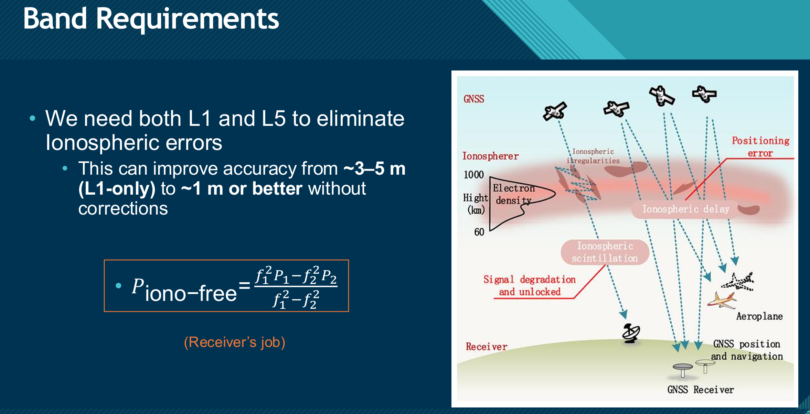
Requirements were set at the proposal stage and refined as concept evaluation pushed the system toward something we could actually build. At the top level: operation at both L1 and L5, and a single 50 Ω SMA output compatible with the receiver we had available for testing.
The first iteration put each patch antenna on its own 4-layer board with a dedicated LNA and bandpass filter on the bottom layer, mirroring how commercial GNSS patch antennas integrate signal processing directly onto the antenna board. The stack-up used the thickest core dielectric JLCPCB offers for 1.6 mm 4-layer boards — going thicker was not viable, since board cost jumps from roughly $7 to over $100 at 2 mm. We inverted the amplifier and antenna ground positions so the antenna would see the maximum available substrate thickness, since patch bandwidth scales with it.
That approach died on its own complexity: it needed blind vias, a very tight layout to fit the LNA, filter, bias tee and combined output in the available area, and it fed the patch with a microstrip edge feed that produced linear polarisation — a polarisation mismatch against RHCP satellite signals worth up to 3 dB of system gain.
Iteration two moved both patches onto one board with coaxial feeds and pushed signal processing to a separate PCB, using two orthogonal probes per patch driven through a hybrid coupler to recover circular polarisation. It solved the polarisation problem and bought substrate thickness for L5, but demanded far tighter fabrication tolerances than we could rely on. After working through several published implementations we were genuinely stuck on which was feasible.
The final architecture came out of a meeting with our advisor and took pieces from both: keep the separately optimised patches, accept linear polarisation as a known 3 dB penalty, and split the system across three boards connected by SMA cables so each subsystem could be validated in isolation. The stack-up simplified to 2 layers in the process.
The signal chain runs: L1 and L5 patches → Wilkinson combiner → wideband LNA → Wilkinson divider → parallel L1 and L5 bandpass filters → Wilkinson combiner → bias tee → receiver. Using a single wideband LNA instead of two narrowband amplifiers cut component count, board area and complexity, at the cost of independent per-band amplification.
Splitting after the LNA is what makes the filtering work. Each band gets its own filter for strong out-of-band rejection, then the two paths recombine into a single 50 Ω coaxial output. The bias tee sits at the end and works in both directions — RF travels out to the receiver while 3.3 V travels back in along the same line to power the LNA, so the whole front-end needs only one cable.
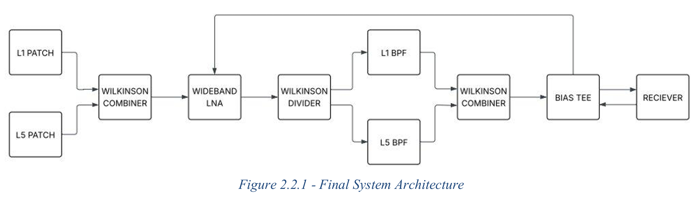
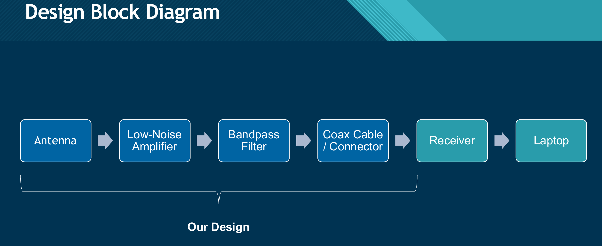
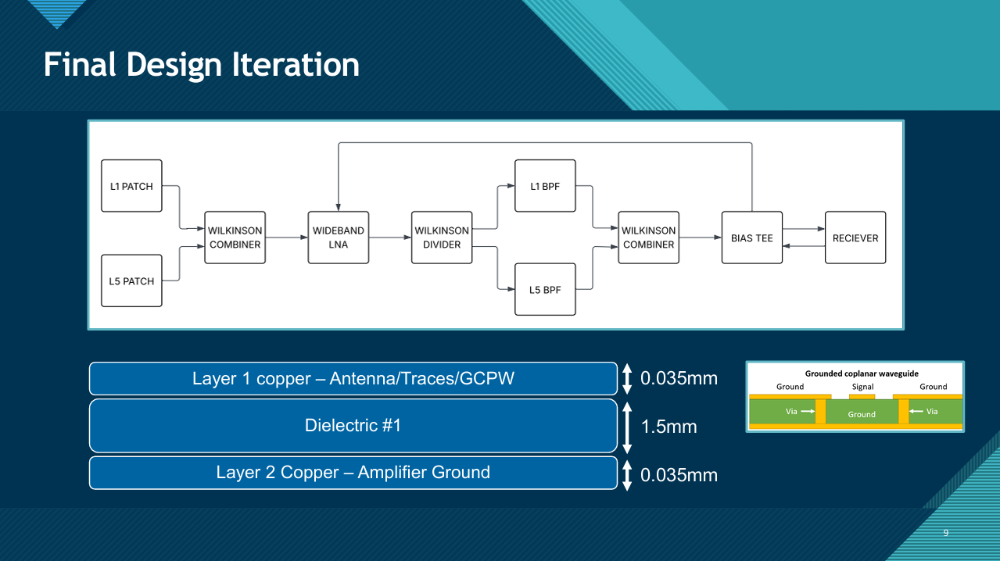
Initial patch dimensions came from the standard rectangular microstrip equations — width and length from the target frequency and substrate permittivity, with the effective dielectric constant accounting for fringing, plus ground plane sizing at W+6h and L+6h. On FR-4 (εr = 4.4) this gave the L1 patch a 57.9 × 43.9 mm footprint and the L5 patch 77.5 × 59.4 mm.
L5 was the harder of the two. It needs wider bandwidth at a lower centre frequency, and patch bandwidth is proportional to substrate thickness — a standard 1.6 mm board could not reach the required 20 MHz. We solved it by mechanically stacking two single-layer boards for an effective 2.9 mm substrate, held together by an edge-mount SMA connector rated to clamp both boards.
Matching to the 50 Ω feedline was done with an inset feed, chosen over quarter-wave transformers and other techniques for simplicity and fabrication tolerance. The analytically derived dimensions did not meet targets on first simulation, so the patch length L, inset depth D and inset width S were tuned iteratively in ADS. L1 took 10 iterations to reach −27.25 dB on the original concept, then 5 more after the stack-up change to land at −30.03 dB. L5 took 12 iterations, then 5 more on the stacked-board concept to reach −27.54 dB with 25 MHz of bandwidth.
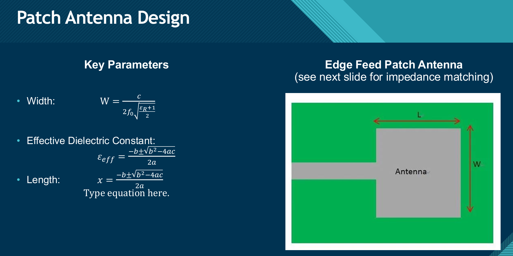
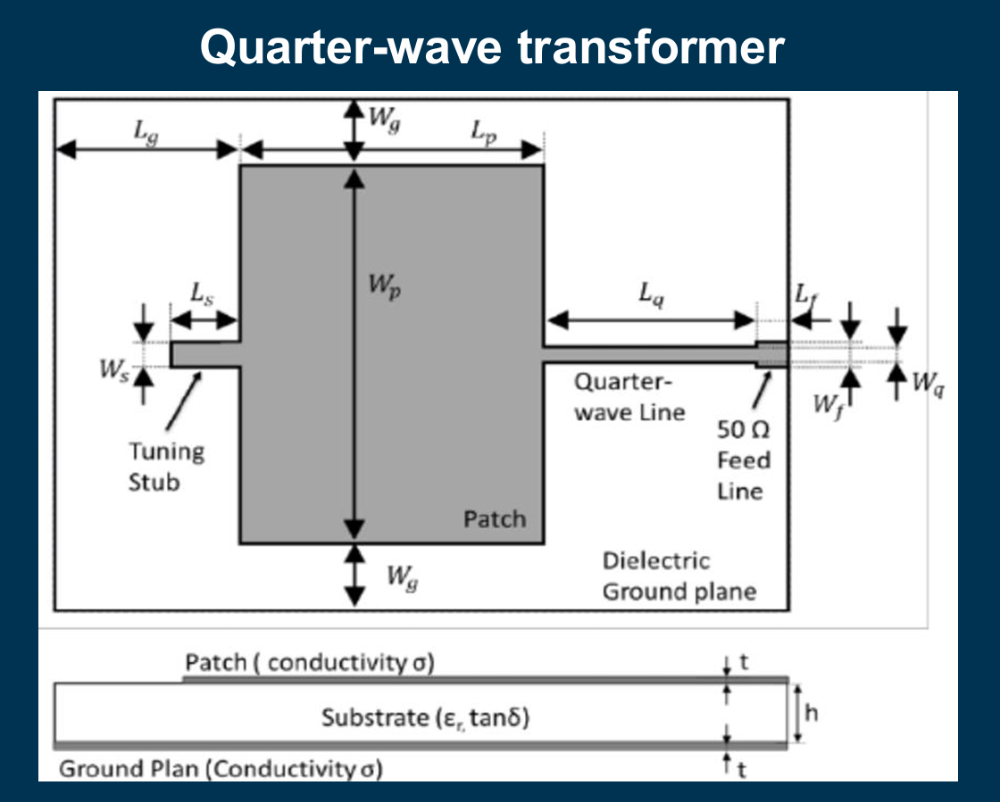
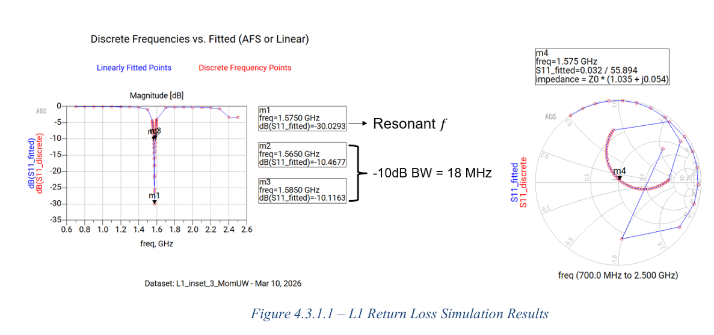
The simulated results mean less than 0.1% of the L1 signal and 0.17% of the L5 signal is reflected at the input. Roughly half of the accepted power is radiated, which is typical for a compact PCB antenna on epoxy glass — commercial patches use ceramic for exactly this reason. Gain lands in the 2.5–3.6 dBi range with a broad pattern, which is the right trade for GNSS: wide sky visibility beats directivity when you are trying to see satellites at many angles at once. The gap between directivity and gain says efficiency, not design, is the limiting factor. The honest weakness is polarisation — the patches are linear, GNSS is RHCP, and that costs about 3 dB.
The RF signal-processing board is a 2-layer FR-4 stack-up, 1.6 mm thick, εr = 4.4, with 35 μm copper on both the top signal layer and the bottom ground plane and 0.02 mm solder mask above and below so the model reflects real fabrication. The bottom layer is a continuous ground plane; vias tie the top ground pours down to it, forming a grounded coplanar waveguide.
GCPW was chosen over plain microstrip for controlled impedance, tighter field confinement and better shielding from external interference. Gap clearance was set to 0.3 mm — the JLCPCB tolerance limit — because trace width and gap scale together and we wanted the narrowest usable traces.
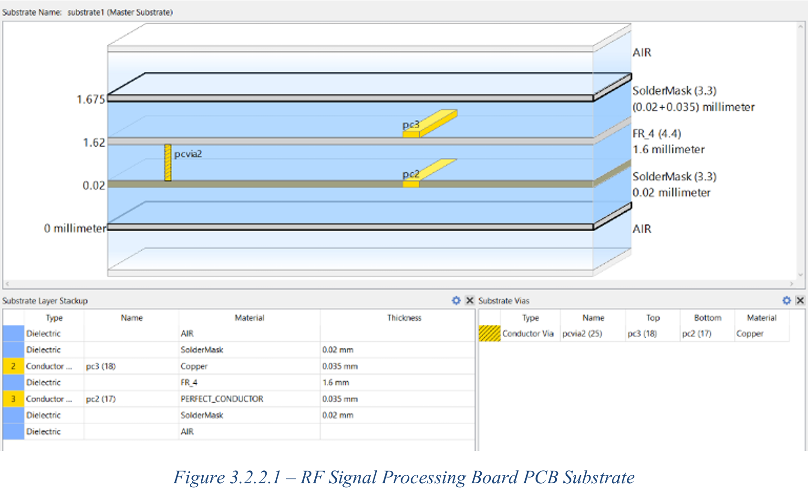
Wherever trace width changed — at SMD component pads, for instance — the transition was tapered rather than stepped. Tapers give a gradual impedance change and reduce reflections, which matters at these frequencies where small discontinuities show up in the S-parameters.
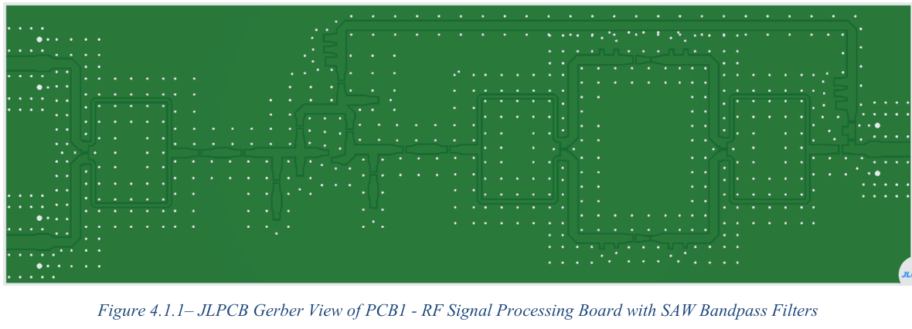
Three Wilkinson stages appear in the chain: one combining the two antennas ahead of the LNA, one splitting for the parallel filters, one recombining afterwards. All are the same design — 50 Ω system impedance, 70.7 Ω (√2·Z₀) quarter-wave branches, and a 100 Ω (2·Z₀) isolation resistor across the outputs to absorb any mismatched power between ports.
The design is centred at 1.361 GHz, the geometric centre of the two bands, so it works acceptably at both. Each branch is a quarter wavelength at that frequency, which LineCalc put at roughly 34.1 mm. Final branch tuning was done in ADS Momentum, since LineCalc only gives a first-order estimate and layout effects, effective permittivity and substrate behaviour all shift the real answer.
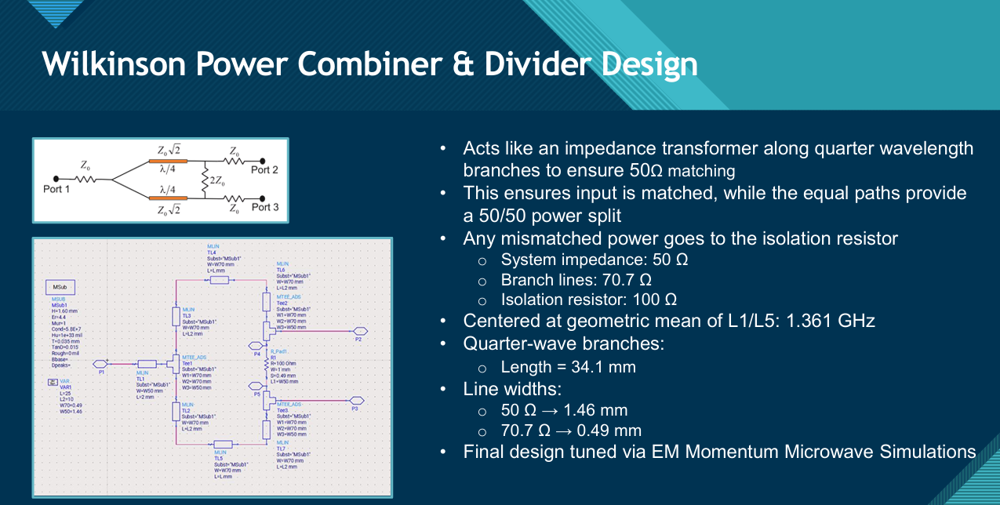
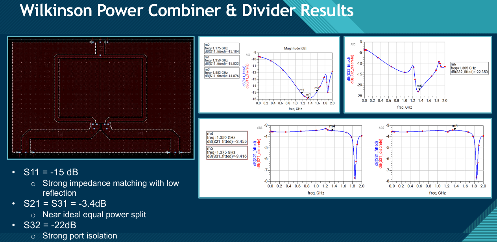
S11 around −15 dB across the operating region means only a small fraction of input power reflects back to the source; anything below −10 dB is acceptable here. S21 and S31 both sit near −3.4 dB against an ideal −3 dB split, the extra loss coming from the real GCPW structure and parasitics around the isolation-resistor junction. That the two are nearly identical is the important part — the split is balanced. The −22 dB isolation between output ports is what keeps the L1 and L5 filter paths from coupling into each other.
The LNA is the piece that determines overall system sensitivity. With GNSS signals arriving below −120 dBm, the amplifier has to add gain while contributing almost no noise of its own, and it has to do it across both bands from a single stage.
Translating the schematic into a manufacturable layout was harder than expected — ideal schematic components and the physical dimensions of real surface-mount parts do not agree, and the layout had to be reworked around actual footprints. All passives were standardised on 0603 (1608 metric) packages to keep placement and assembly consistent. The geometry was kept compact and as symmetric as possible to hold down parasitic inductance and capacitance, and microstrip matching networks maintain the 50 Ω environment at both ports.
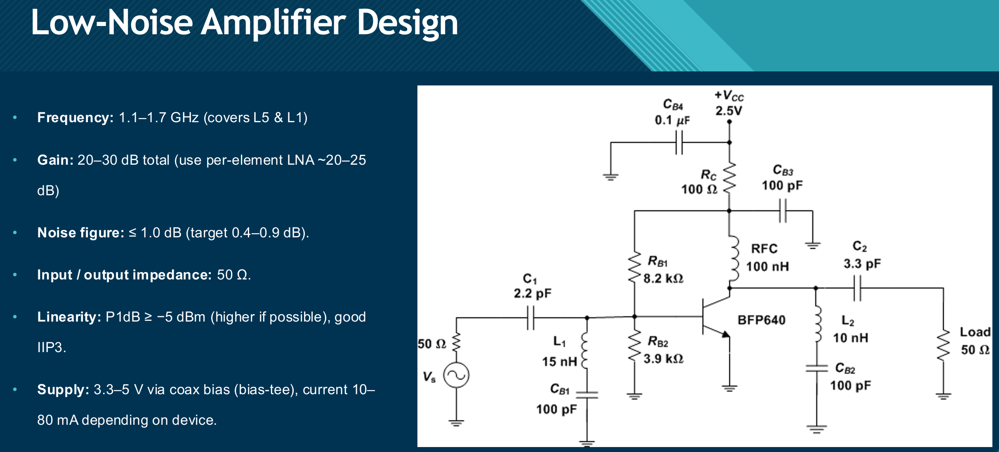
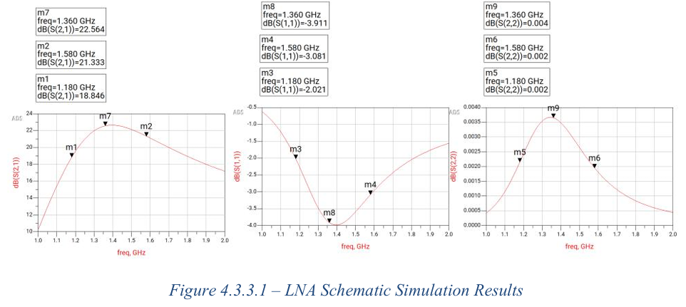
Gain holds up well across the band. Input matching is the weaker result: S11 sits below −2 dB with a minimum near −4 dB, short of the −10 dB you would want from a well-matched RF input, and whether that translates into acceptable noise performance on a physical board is one of the questions the project did not get to answer.
Both filters are third-order Chebyshev bandpass networks designed in the ADS filter designer. Chebyshev was chosen for its sharper transition band and lower required order, accepting a small passband ripple in exchange — 0.5 dB ripple against 30 dB stopband attenuation. The simulated responses centre correctly at 1.575 GHz and 1.176 GHz with 30 MHz passbands, sharp 30 MHz transitions, negligible 0–1 dB insertion loss, and 50–70 dB attenuation outside the passband.
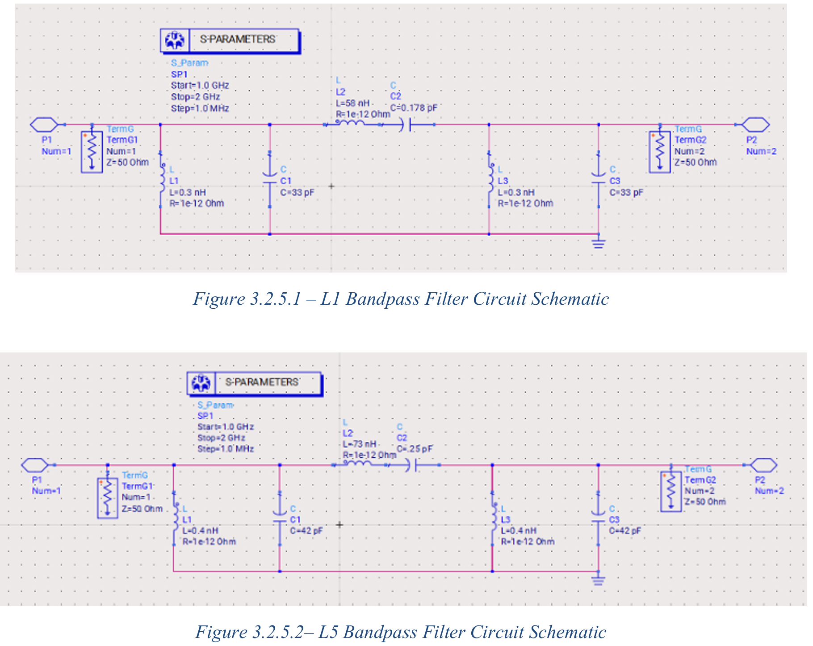
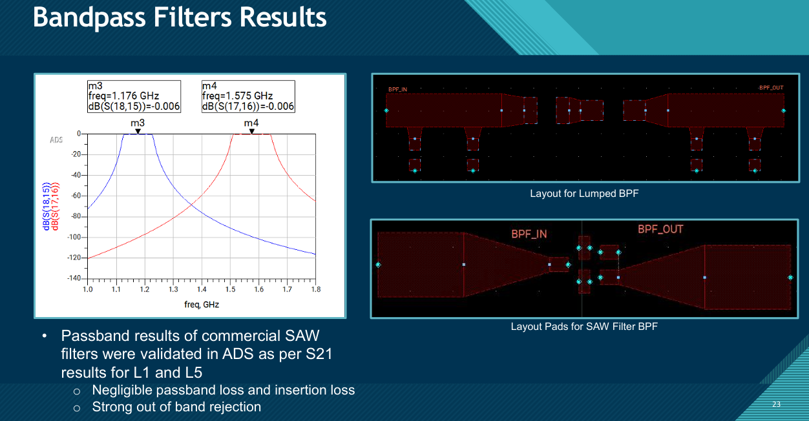
The catch is visible in the component values themselves. A 0.178 pF capacitor is at the edge of what exists as a real part, and at 1.5 GHz the parasitic inductance of the package and the pad capacitance of the layout are comparable to the intended values. Ideal simulations do not capture that. Because of it, commercial SAW filters for GNSS L1 and L5/E5a/B2a were purchased as a backup and a second board was laid out with SAW footprints drawn to the manufacturer's land pattern, so the two implementations could be measured against each other on identical setups.
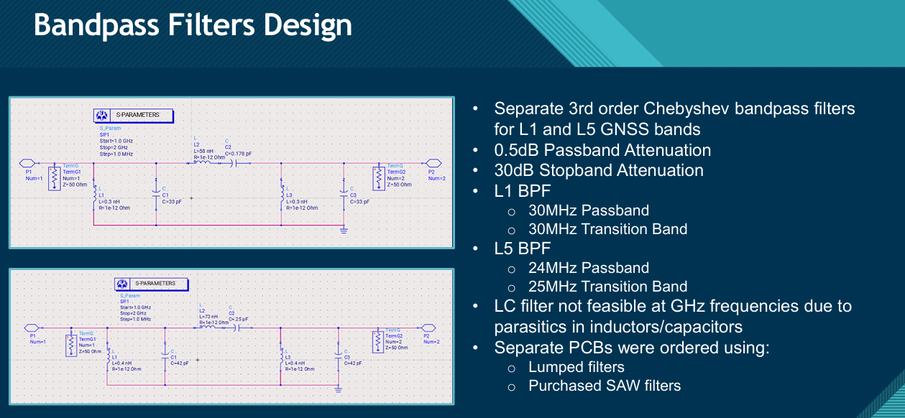
The bias tee combines DC power and the RF signal on one transmission line. A series capacitor in the RF path blocks DC while passing RF; an inductor in the DC branch passes current while presenting high impedance to RF. With C = 100 pF the capacitive reactance is about 1 Ω at band — negligible next to 50 Ω — and with L = 22 nH the inductive reactance is around 200 Ω, comfortably larger.
In the final layout the LNA's RF output and its DC bias point ended up fairly far apart, which is a real problem at these frequencies. To keep the supply stable we added a multi-stage decoupling network of 100 nF, 10 nF and 100 pF capacitors, placed both at the bias tee junction and again right at the LNA, so noise is filtered across a broad frequency range and the DC rail is clean at the point of use.
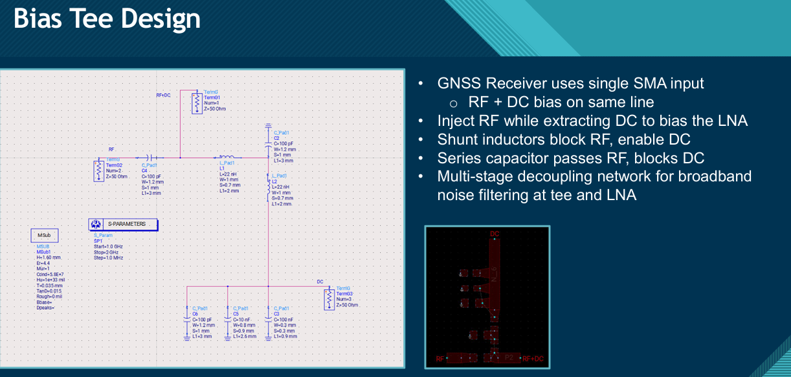
The −140 dB RF-to-DC isolation is the number that matters here: essentially no RF leaks back into the supply, confirming the inductors are doing their job while the LNA still gets its 3.3 V.
To validate the complete chain, S-parameter data from every individual stage was exported as S2P files and cascaded in a single ADS schematic. This is a circuit-level simulation using exported blocks rather than a full EM simulation of the assembled board, so it does not capture every non-ideal effect a physical PCB would have — but it does confirm the stages work together.
The result shows clear dual-passband behaviour with amplification in both the L1 and L5 bands and strong rejection everywhere else, which is exactly the intended system response.
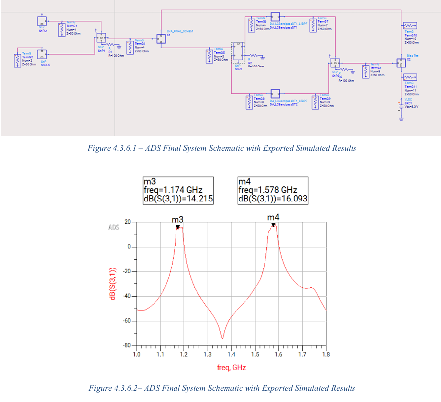
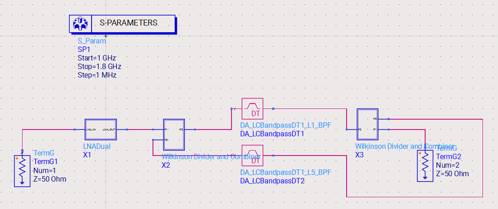
Seven boards were designed and ordered through JLCPCB: three final boards plus four modular variants for testing. All are 2-layer FR-4 at 1.6 mm, except L5, which is two boards stacked to 3.2 mm.
Two variants of the RF signal-processing board were produced — one using the commercial SAW bandpass filters, one using the equivalent lumped components — so that if the lumped filters underperform in hardware, the SAW version is already fabricated and ready to measure. A third board places the patch antennas and the full signal chain on one PCB for the most compact form, at the highest design risk. A separate modular board with SMA pads between every stage lets each section be physically separated and characterised in isolation before being evaluated as a cascaded system.
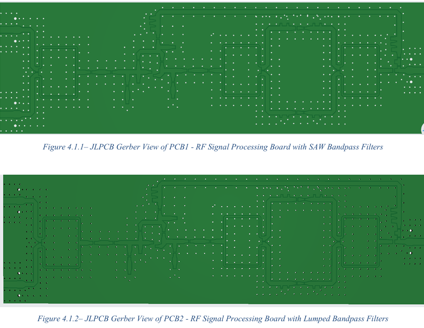
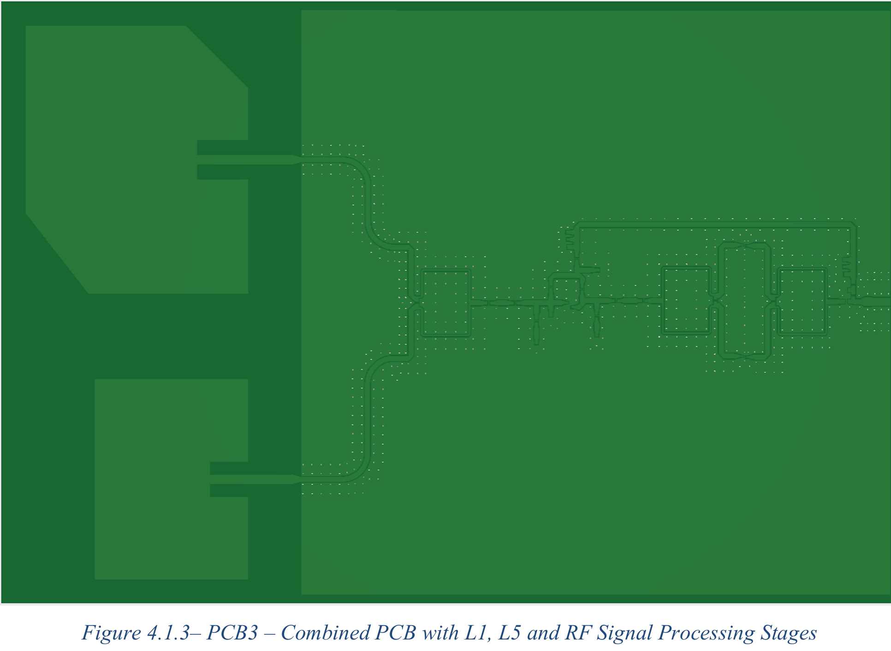
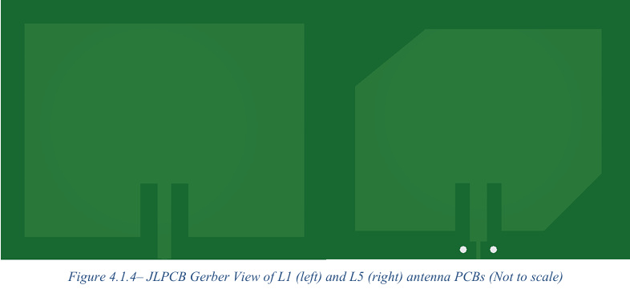
The boards never arrived. Manufacturing was held up by repeated automated holds on the JLCPCB platform that contradicted the manual assurances we were getting over email. Representatives confirmed on March 20th, March 23rd and April 2nd that the order would proceed once we clarified intentional design choices — the absence of drill holes, certain dimensional discrepancies — but the status stayed "suspended" for over a week. Their automated screening flags designs with missing layers to prevent production errors, and the mismatch between manual approval and automated validation is what cost us the schedule. Four of the seven boards were still on hold at the time of writing; the three completed ones sat in a warehouse waiting on the rest.
As a last resort we tried fabricating in-house through the Western Engineering Electronics Shop. Only the patch antenna was even attempted — the GCPW clearances on the signal-processing board were below the shop's 20 mil minimum. The milling process could not remove enough copper without risking the equipment, and the boards came out largely unetched and unusable. The shop's conclusion was that the facility could not manufacture the design to the required specification.
So the results in this project are simulation results. The design is complete, reviewed and fabrication-ready; the hardware validation is the one step it ran out of time for.
The testing strategy targets the antennas and the filters first, since those are the most sensitive to fabrication tolerance and high-frequency parasitics.
For the patches, validation starts with physical inspection — measuring fabricated length and width with digital calipers against the final ADS values, since resonance is highly geometry-dependent and small deviations shift the operating frequency. If resonance is correct but matching is poor, the inset depth gets adjusted in roughly 0.2 mm increments to find the true 50 Ω feed point. Worst case, a bracketed set of boards with dimensions varied ±1% gets fabricated to converge on the target.
For the filters, S21 and S11 measurements on the lumped design establish insertion loss, bandwidth and out-of-band rejection, then the SAW variant is measured on an identical setup so the two can be compared directly and the better implementation selected.
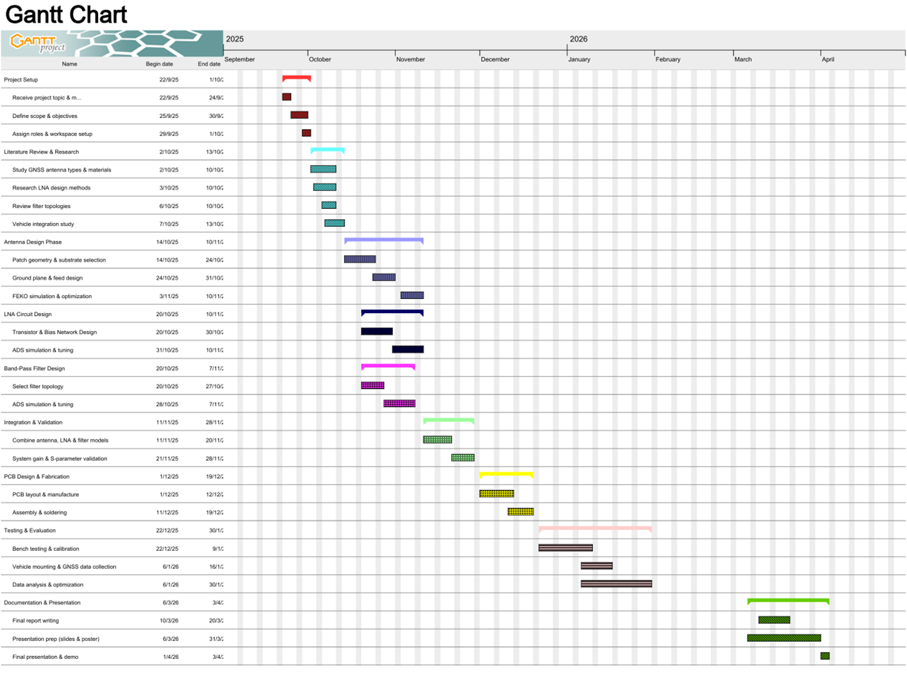
I worked primarily on the early-stage antenna subsystem and the overall system architecture. That covered research into GNSS antenna topologies, placement constraints for hidden in-vehicle integration, and the design constraints specific to dual-band L1/L5 operation in an automotive environment. I set up the FEKO and ADS modelling workflow the team built on, drove block-diagram development and subsystem organisation, and handled LNA component sizing and footprint standardisation to get the design into a state that could actually be laid out on a board.
The rest of the team split the remaining subsystems: Yassine Benjelloun on antenna design and simulation, Brandon Medeiros on the RF signal-processing chain and board layout, Jordan Austin on system integration and validation planning. Literature review, concept evaluation, simulation review and the major technical decisions were shared.
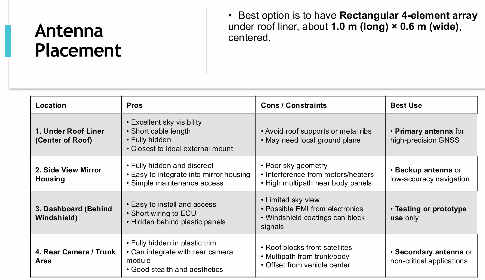
In simulation, every subsystem cleared its target. The patches resonated at their frequencies with −30 dB and −27.6 dB return loss against a −10 dB requirement. The Wilkinson stages produced a near-equal −3.4 dB split with −22 dB isolation. The LNA delivered over 18 dB at L5 and over 21 dB at L1. Both filters showed clean passbands with 30 dB or better rejection. The bias tee passed RF with negligible loss at −140 dB DC isolation. Cascaded, the system showed dual-passband amplification with strong rejection everywhere else.
In hardware the answer is incomplete, and it is worth being direct about the gaps. Lumped filters at GHz frequencies will not behave the way ideal ADS models predict. The LNA input match at −2 dB is short of where it should be. The antennas are linearly polarised, costing about 3 dB against RHCP satellite signals — a deliberate trade against the complexity of a hybrid-coupler circular polarisation scheme, but a real penalty regardless.
What the project produced is a fully designed, fabrication-ready dual-band GNSS front-end with documented simulation results at every stage, modular enough to characterise subsystem by subsystem once boards arrive, with a SAW fallback already laid out if the lumped filters underperform.
If you're interested in my skills and experience, please don't hesitate to get in touch with me via email or cell. I would be happy to answer any questions you may have about my work history or discuss potential employment opportunities. I am highly motivated, reliable, and always eager to learn new things, which I believe would make me a valuable addition to any team.
Toronto, Ontario
Canada, L4J 9K2